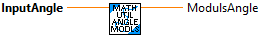

Wraps an angle to the range -pi to pi radians.
Inputs:
- angleRadians -- Angle to wrap in radians.
Outputs:
- modulusAngle -- The wrapped angle.
Returns 0.0 if the given value is within the specified range around zero. The remaining range between the deadband and the maximum magnitude is scaled from 0.0 to the maximum magnitude.
Inputs:
- value -- Value to clip.
- deadband -- Range around zero.
- max magnitude -- The maximum magnitude of the input. Can be infinite. (Default: 1.0)
Outputs:
- Result -- The value after the deadband is applied.

Returns value clamped between low and high boundaries.
Inputs:
- value -- Value to clamp.
- low limit -- The lower boundary to which to clamp value.
- high limit -- The higher boundary to which to clamp value.
Outputs:
- Result -- The clamped value.

Returns value clamped between low and high boundaries.
Inputs:
- value -- Value to clamp.
- low -- The lower boundary to which to clamp value.
- high -- The higher boundary to which to clamp value.
Outputs:
- Result -- The clamped value.

Returns modulus of input. This is used for continuous systems, for example rotational systems.
Inputs:
- input -- Input value to wrap.
- minimumInput -- The minimum value expected from the input.
- maximumInput -- The maximum value expected from the input.
Outputs:
- modulus -- The wrapped value.
- AltModulus -- The wrapped value calculated a different way (used only for debugging).
- Different -- If TRUE, then the modulus and AltModulus are different... (used only for debugging)

Perform linear interpolation between two values.
Inputs:
- StartValue -- The value to start at.
- EndValue -- The value to end at.
- t -- How far between the two values to interpolate. This is clamped to [0, 1].
Outputs:
- interpolatedValue -- The interpolated value.